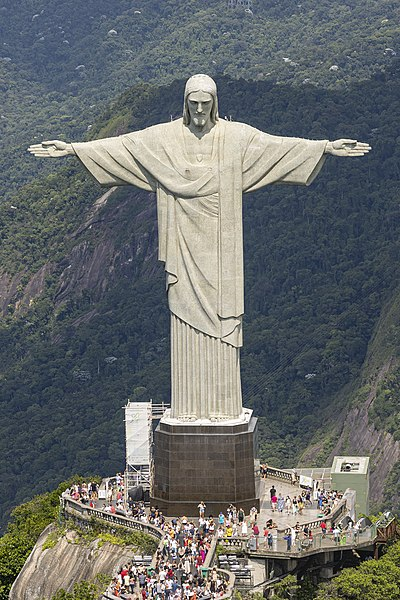

Sobre o Cristo Redentor

O Cristo Redentor é uma famosa estátua localizada na cidade do Rio de Janeiro, Brasil. Abaixo estão algumas informações relevantes sobre o Cristo Redentor:
- Localização: O Cristo Redentor está situado no topo do morro do Corcovado, no Parque Nacional da Tijuca, dentro da cidade do Rio de Janeiro, Brasil. O morro do Corcovado fica a cerca de 710 metros acima do nível do mar.
- Altura: A estátua do Cristo Redentor tem uma altura de 30 metros, contando com o pedestal. A altura da estátua em si, do topo da cabeça até os pés, é de aproximadamente 28 metros.
- Peso: O peso do Cristo Redentor é estimado em torno de 635 toneladas.
- Inauguração: A estátua do Cristo Redentor foi inaugurada em 12 de outubro de 1931. A construção da estátua começou em 1922, em comemoração ao centenário da independência do Brasil, e levou cerca de nove anos para ser concluída.
- Material: A estátua é feita de concreto armado e revestida com pedra-sabão. O esqueleto interno é composto de ferro.
- Arquiteto e escultor: O arquiteto responsável pelo projeto do Cristo Redentor foi Heitor da Silva Costa, um renomado arquiteto brasileiro. O escultor responsável pela criação da estátua foi o francês Paul Landowski.
- Reconhecimento: O Cristo Redentor é um dos ícones mais famosos do Brasil e foi reconhecido como uma das Sete Maravilhas do Mundo Moderno em 2007.
- Acesso: Para chegar ao Cristo Redentor, os visitantes podem utilizar o Trem do Corcovado, que percorre uma trilha íngreme até o topo do morro, ou optar por vans que fazem o transporte até lá.
- Vista panorâmica: Do topo do Cristo Redentor, os visitantes têm uma vista panorâmica espetacular da cidade do Rio de Janeiro, incluindo a Baía de Guanabara, a Praia de Copacabana, o Pão de Açúcar e outras atrações.
Essas são algumas das informações básicas sobre o Cristo Redentor. Essa icônica estátua atrai milhões de turistas todos os anos, sendo um dos principais pontos turísticos do Brasil e um símbolo do país.
significado e a importância do monumento
O Cristo Redentor é um monumento de grande significado e importância tanto para o Brasil quanto para o mundo. Ele representa diversos aspectos simbólicos e históricos que o tornam um marco icônico da cidade do Rio de Janeiro e do país como um todo. Aqui estão alguns pontos importantes sobre o significado e a importância do Cristo Redentor:
- Religião: O Cristo Redentor é uma representação da figura de Jesus Cristo, símbolo central do cristianismo. Ele simboliza a fé e a religiosidade da população brasileira, que é majoritariamente cristã. A estátua se tornou um ponto de peregrinação para muitos fiéis e um local de oração e contemplação.
- Unidade e paz: O Cristo Redentor também representa a ideia de união e paz entre as pessoas. Sua imponente presença no alto do morro do Corcovado transmite uma mensagem de harmonia e fraternidade, lembrando-nos da importância de valores como tolerância, compaixão e respeito mútuo.
- Símbolo nacional: O Cristo Redentor é um dos principais símbolos do Brasil, reconhecido mundialmente. Ele representa a identidade brasileira e é uma representação visual icônica do país. É frequentemente associado ao Rio de Janeiro e é um dos principais destinos turísticos do Brasil, contribuindo para a economia e o turismo local.
- Engenharia e arquitetura: A construção do Cristo Redentor foi uma verdadeira façanha da engenharia e arquitetura. A estátua foi projetada para resistir a condições climáticas adversas, como ventos fortes e raios, e permaneceu firme ao longo dos anos. Sua grandiosidade e beleza arquitetônica são admiradas por especialistas e visitantes de todo o mundo.
- Patrimônio cultural: O Cristo Redentor faz parte do patrimônio cultural brasileiro e representa uma parte importante da história do país. Sua inauguração em 1931 foi um marco significativo para o Brasil e desde então tem sido um local de celebração de eventos importantes, como o réveillon e a Semana Santa.
Em resumo, o Cristo Redentor é um monumento de grande significado religioso, cultural e histórico para o Brasil. Ele simboliza a fé, a paz, a unidade e é uma representação visual icônica do país. Além disso, o monumento é admirado pela sua arquitetura impressionante e contribui para o turismo e a economia local.
destaques sobre sua construção e inauguração.
A construção e a inauguração do Cristo Redentor foram eventos marcantes na história do Brasil e envolveram vários aspectos interessantes. Aqui estão alguns destaques sobre sua construção e inauguração:
Projeto e arquitetura: O projeto do Cristo Redentor foi elaborado pelo arquiteto brasileiro Heitor da Silva Costa, que venceu um concurso nacional para a sua concepção. Ele contou com a colaboração do engenheiro brasileiro Albert Caquot e do escultor francês Paul Landowski. A estátua foi projetada em estilo art déco e sua estrutura interna foi construída com ferro, enquanto a parte externa é revestida com pedra-sabão.
Duração da construção: A construção do Cristo Redentor teve início em 1922, em comemoração ao centenário da independência do Brasil, mas foi interrompida várias vezes devido a questões financeiras e técnicas. A estátua foi finalmente concluída em 1931, levando cerca de nove anos para ser finalizada.
Financiamento: A construção do Cristo Redentor foi financiada principalmente por doações, tanto do governo brasileiro quanto de indivíduos e organizações. As contribuições vieram de diferentes partes do Brasil e até mesmo de outros países, demonstrando o apoio e a importância que o projeto tinha para as pessoas.
Trabalho de construção: A construção do Cristo Redentor envolveu um trabalho árduo e desafiador. Devido à sua localização no topo do morro do Corcovado, foi necessário construir uma estrutura de acesso, que incluiu a construção de trilhas, túneis e um sistema ferroviário. Além disso, foram usados guindastes e andaimes para erguer a estátua em si.
Inauguração e cerimônia: A estátua do Cristo Redentor foi oficialmente inaugurada em 12 de outubro de 1931, em uma cerimônia que contou com a presença do então presidente do Brasil, Getúlio Vargas, e milhares de pessoas. A cerimônia incluiu discursos, apresentações musicais e religiosas, marcando um momento de celebração e orgulho para o país.
Reconhecimento internacional: Desde sua inauguração, o Cristo Redentor tem sido reconhecido internacionalmente como um marco arquitetônico e um símbolo do Brasil. Em 2007, foi eleito uma das Sete Maravilhas do Mundo Moderno em uma votação global.
A construção e a inauguração do Cristo Redentor representam um feito notável de engenharia e um marco cultural e histórico para o Brasil. A estátua continua a ser uma atração turística importante e um símbolo duradouro de fé, paz e união.